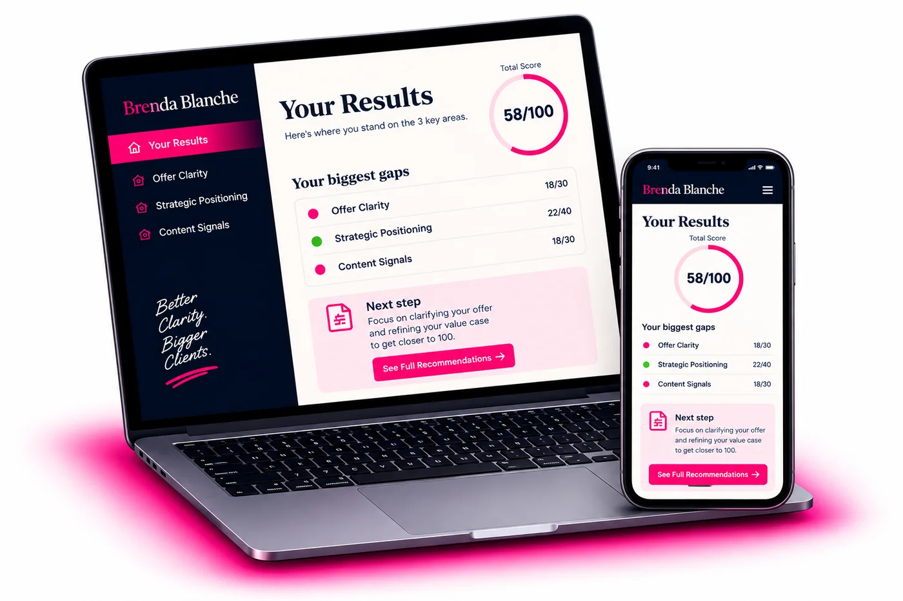

You're good at what you do. So why does the client still go to someone else? Twelve questions. Ninety seconds. A real, specific read of what your profile and content are currently signaling — not a grade, an actual diagnosis.
Take the Free Scorecard →"Most skilled people don't have a visibility problem. They have a translation problem."
Can a stranger tell, in one sentence, exactly what you help people do?
Would three people who know your work describe you the same way?
Does your content show your thinking, or just your conclusions?
